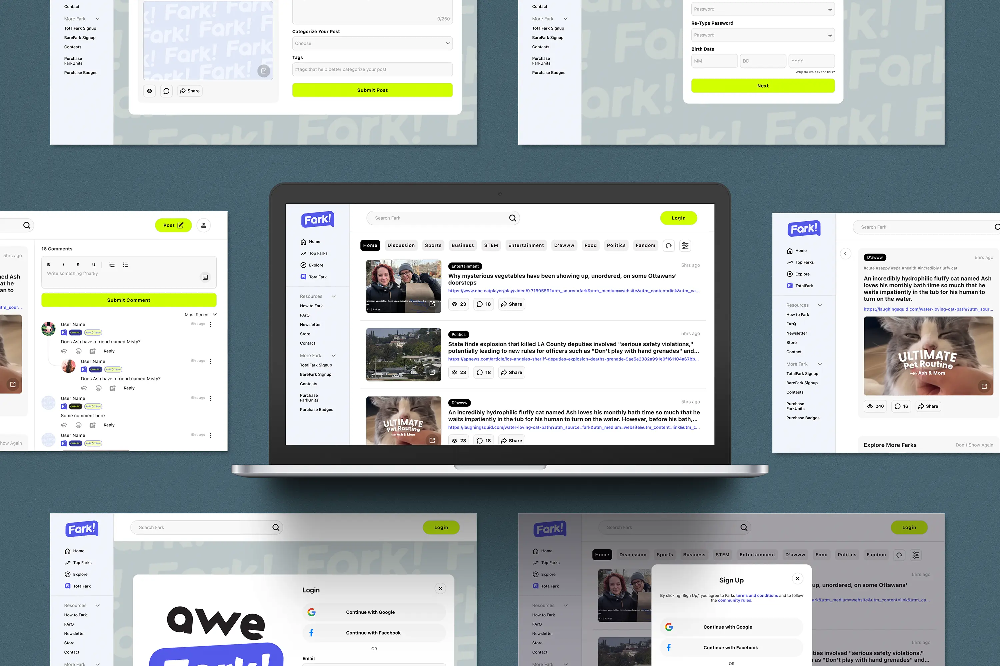
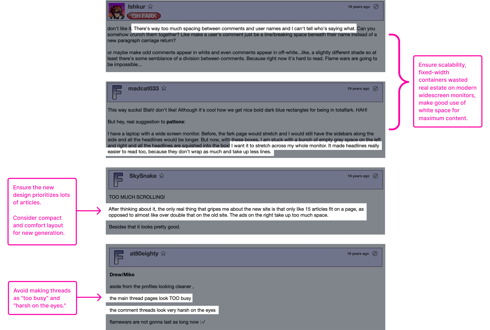
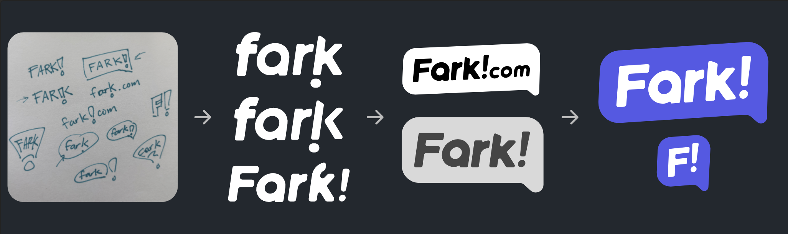
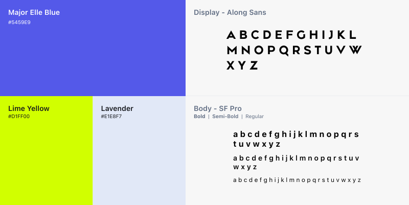
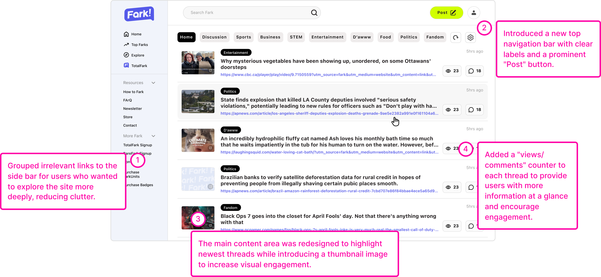
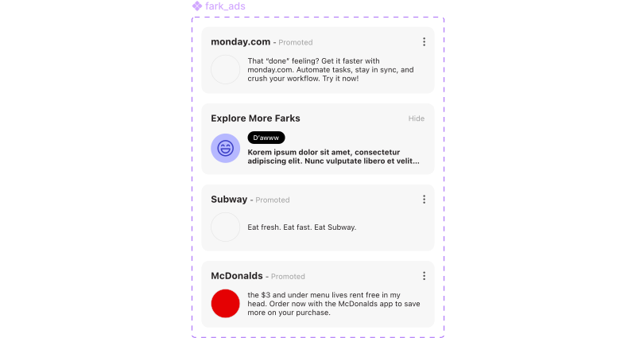
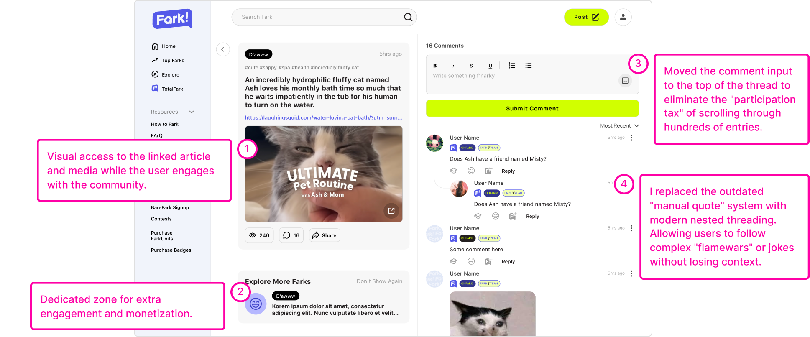
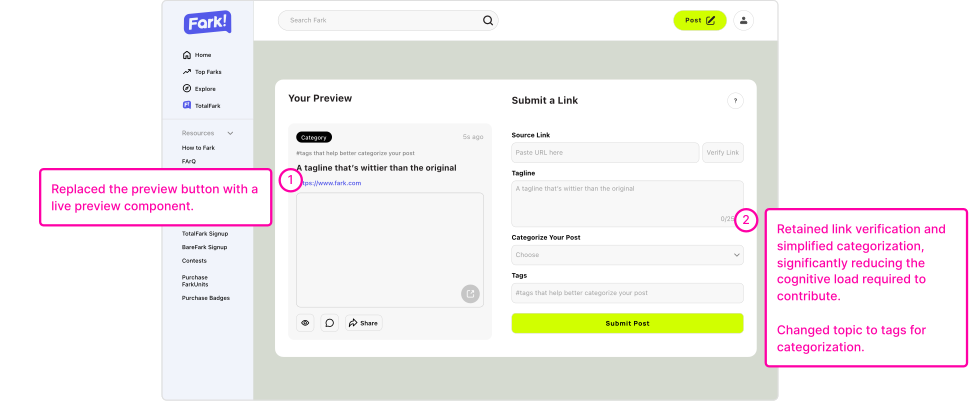
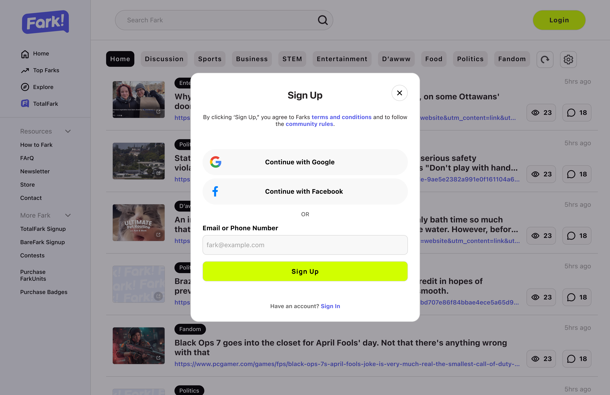
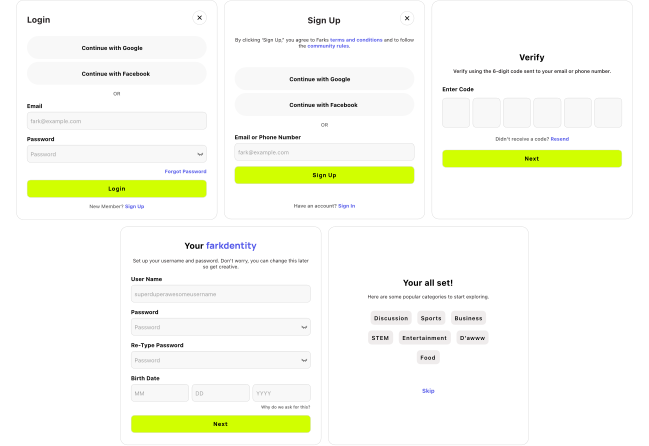

An end-to-end redesign of Fark.com, a news aggregator from the late 1990s — reviving it for new users without alienating its veterans.

Measured across 6 moderated usability tests with new users. Projected, not production-validated.
Time to first engagement, after replacing the signup loop with an instant 6-digit code and OAuth.
Required signup fields, by cutting bio and profile-picture steps out of the critical path.
Fark, Fark.com, TotalFark and BareFark consolidated into one platform identity.
I went into the archives and read how the community reacted to Fark's last major redesign in 2007.

Then I watched six new users fail. Six moderated tests, four failure points. This revealed critical pain points in navigation, content submission, and engagement.
What looked like the forum link went to the article being discussed.
Category vs. topic read as the same thing, and the entry point vanished whenever new links posted.
The lengthy signup process and delayed gratification of account access created a significant barrier to entry, leading to user drop-off.
On busy threads users were required to scroll past 50 comments to reach the input, and gave up on the way.
I needed to address the brand's outdated and fragmented identity. Fark existed as a collection of URLs and names (Fark, Fark.com, TotalFark, BareFark) rather than a unified community. I stripped it back to the core name and built a single scalable identity and design system on top of it


The home page contains the most critical navigation paths, so I prioritized clarity and accessibility. I moved links into a sidebar for people who want to dig, gave the main column the rest of the screen, and added thumbnails and comment counts so a scan tells you where the conversation is.

Added a ad system to showcase sponsored content while still fitting into the overall design aesthetic.

The post page needed to be optimized for readability and engagement. I focused on improving the layout, enhancing the comment hierarchy, and providing a better user experience for interacting with content.

I simplified the submission process by replacing the topic input with tags, which are more intuitive for users to understand and use. I also replaced the preview button with a live "preview" feature that allows users to see how their submission will look before they post it.



Sometimes, adding more content or functionality is better than removing it!
Swapping email verification for an OTP bought more than any layout change did. The cheapest wins were structural!
Designing for a passionate, long-term user base requires a deep understanding of their values and mental models.
A full accessibility audit of the nested threading for screen-reader and keyboard-only navigation, plus stress-testing headline length and empty states.
last updated august 2026